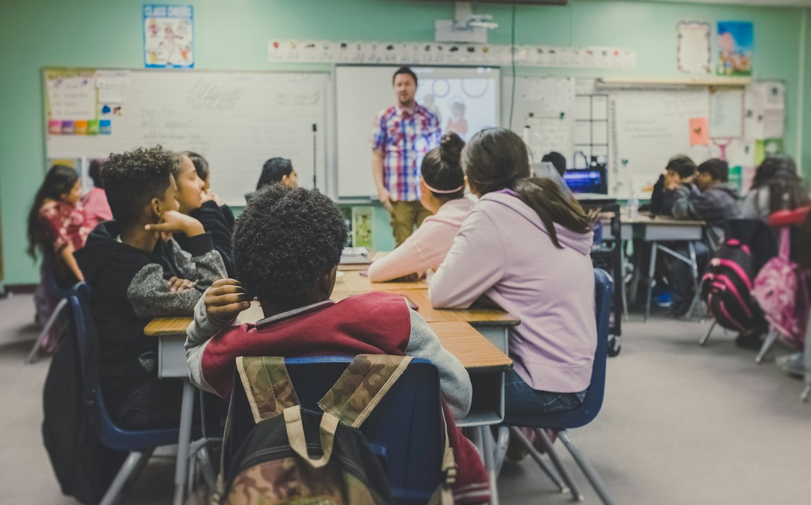
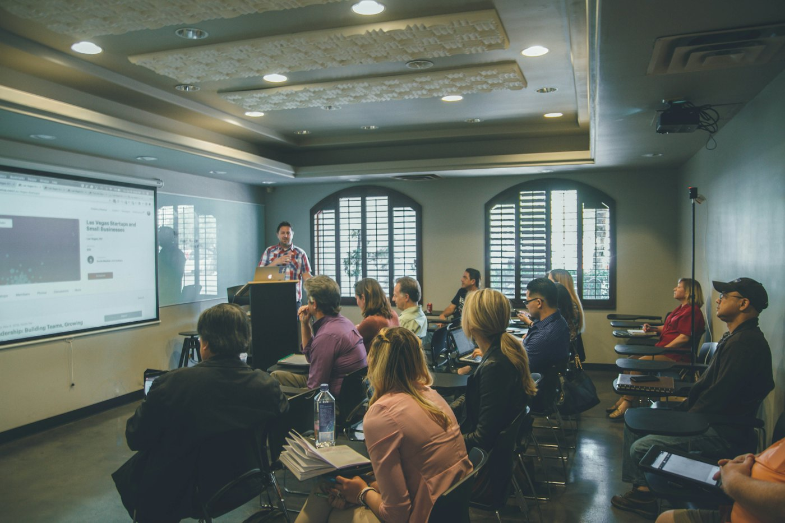

Funcionalidades propostas
- Perguntas guiadas antes da resposta
- Pistas graduais, uma de cada vez
- Verificação do raciocínio do aluno
- Painel de acompanhamento para o professor
Projeto em desenvolvimento · em validação
O Mentor IA é uma proposta de plataforma Web para alunos do ensino médio. Em vez de entregar a resposta pronta, ele orienta o raciocínio com perguntas, pistas e verificação.
Contexto e propósito
Com a IA ao alcance de um clique, muitos estudantes copiam a resposta sem entender o caminho até ela. O Mentor IA nasce para inverter essa lógica: a tecnologia serve de apoio ao raciocínio, não como atalho.
Nosso propósito é ajudar o aluno a construir o próprio entendimento, passo a passo, com o professor acompanhando de perto.
Produto


Plataforma
O Mentor IA está sendo pensado como uma plataforma Web, acessível pelo navegador no computador ou no celular, sem instalação.
Demonstração interativa
Simulação pré-programada: não há IA real, diagnóstico nem medição de desempenho.
Identidade
Apoiar estudantes do ensino médio a desenvolverem autonomia e pensamento crítico, usando a inteligência artificial como mentora do raciocínio, e não como fonte de respostas prontas.
Ser reconhecida como uma referência em tecnologia educacional que une aluno, professor e IA para tornar o aprendizado mais significativo e acessível.
O aluno é protagonista do próprio aprendizado.
Entender o porquê vale mais do que decorar o quê.
Uso responsável da IA e respeito aos dados de cada pessoa.
Aprendizado acessível para diferentes ritmos e realidades.
Aluno, professor e tecnologia trabalhando juntos.
Clareza sobre o que a plataforma faz e o que ainda não faz.
Revise estes textos com a versão aprovada pelo grupo antes da apresentação.
Organograma
Filipe Silva Avena
Lucas Araujo de Andrade
Victor Fernandes de Vasconcelos
Bruno Nascimento Rocha
Contato e redes
Perfil planejado, ainda não criado.
Sugestão de planejamento
Página planejada, ainda não criada.
Sugestão de planejamento